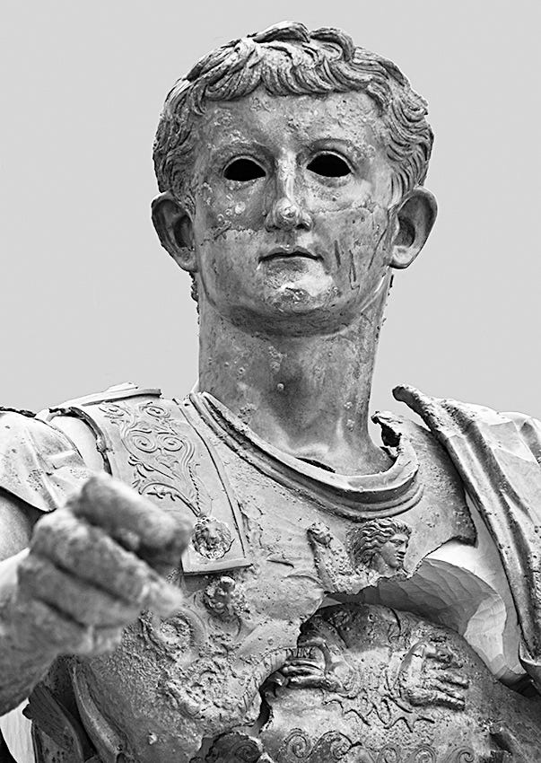

Two Latin epigrams of Germanicus
Literal translation and a little commentary.
The Battle of Teutoburg Forest (9 AD) belongs to a small number of ancient battles that still hold the popular imagination. The image of legionaries being surrounded by Germanic forests, the great carnage that followed and the elderly Augustus banging his head shouting “Quintilius Varus, give me back my legions”[1] are familiar to any Roman history enthusiast. The subsequent Roman campaigns by Germanicus (the adopted son of Tiberius and presumed heir to the Julio-Claudians) that re-established Roman control west of the Rhine seem to be less popular now, but he was one of the most beloved Roman general of his time and if not for his untimely death would have been the Emperor. (His son, Gaius, who did become the emperor afterwards, is better known as Caligula these days.) One could go on and on about Germanicus’ life but that would only make this piece much longer. Perhaps a separate article on him someday.

Fig: Bronze statue of Germanicus (maybe idk, all the Julio-Claudians look the same to me). From the Ameria Civic Archaeological Museum, Amelia
As for his literary works, he is more known for his translation or (more accurately) his transcreation of Aratus’ Φαινόμενα (Phainomena) into Latin and some Greek epigrams known from the Palatine Anthology. A couple of Latin epigrams ascribed to Germanicus, collected in the Latin Anthology, seem not to have excited any engagement. English translations seem to be difficult to find on the internet though the epigrams themselves are sometimes referred to in some scholarly works on Germanicus[2]. The reasons for this neglect is not hard to find : they’re neither particularly noteworthy in themselves nor shocking wit ( and vulgarity ) that characterizes someone like Catullus or Martial find any place in them.
For some unknown reason, I really like them, especially the first. The English translation is in prose as I’m not much of a poet (not in English anyway) and as literal as I can make them without sacrificing clarity. The poems are numbered 708 and 709 in the Latin Anthology in Riese’s edition.
I. AD HECTORIS TVMVLVM
Mārtia prōgeniēs, Hector, tellūre sub īmā
fās audīre tamen sī mea uerba tibi,
respīrā, quoniam uindex tibi contigit hērēs,
quī patriae fāmam prōferat usque tuae.
Īlios ēn surgit rūrsum inclita, gēns colit illam
tē Mārte īnferior, Mārtis amīca tamen.
Myrmidonas periisse omnēs dīc, Hector, Achillī,
Thessaliam et magnīs esse sub Aeneadīs.
Translation :
To the grave of Hector.
Breathe, Hector, child of Mars, if its right for you to hear my words beneath the lowest earth. For an avenging heir exists who carries on the glory of your land. Troy rises again and the people who hold it are, though inferior to you in war, friends of Mars nonetheless. Say to Achilles that the Myrmidons have all perished and that Thessaly is under the mighty descendants of Aeneas.
Some Comments:
The poet speaks to the tomb of Hector informing him that the descendants of the Trojans (i.e., Romans) have taken vengeance upon the Greeks. In antiquity, Ophryneion in what is now northwestern Türkiye was supposed to be the site of Hector’s tomb. In fourth century BC, the remains were supposedly transferred to the city of Thebes in Greece. Of course, Hector is a mythical figure but there was a widespread belief in antiquity of the historicity of Homeric heroes and many such supposed tombs were centers of hero-cults. Germanicus might have really visited the supposed tomb of Hector like Alexander visited the supposed tomb of Achilles and the Roman emperors visited the tomb of Alexander himself. A Greek version of this epigram is extant in the Palatine Anthology (IX 387).
child of Mars : literally Martian progeny. Mars (or Ares) favors the Trojan side during the Trojan war. As their mythical founder Romulus was thought to be a son of Mars, the Romans considered themselves to be the descendants of Mars too.
right for you : ‘right’ here translates the Latin ‘fas’ which means right in the religious sense, something that the gods dictate or favor in distinction to ‘ius’ or ‘lex’ which refer to human laws enforced by the state. I’m not particularly knowledgeable about modern parallels but the concept seems analogous to that of aṣ̌a/ṛtá among the ancient Indo-Iranians although ‘fas’ is not actually cognate with aṣ̌a/ṛtá.
inferior to you in war : ‘war’ here translates Latin ‘Mars’. In the same line the word ‘Mars’ occurs twice, once as the god’s name and once as war. I couldn’t preserve the effect although a looser translation with something like ‘lesser in martial virtue’ might have done the trick.
Myrmidons : Achilles belonged to the tribe of Myrmidons.
Thessaly : A region in Greece. The Myrmidons were thought to be a Thessalian tribe.
say to Achilles : Hector was killed by Achilles during the Trojan war.
descendants of Aeneas : Aeneades. Romans considered themselves to be the descendants of the Trojan hero Aeneas who fled west after the fall of Troy to found a new kingdom for his people. A generation before Germanicus’ time, the poet Virgil under Augustus’ wishes had composed the epic Aeneid which went on to become an instant classic and the Roman response to the epics of Homer. It’s often considered the best of classical Latin poetry to this day.
II. DE PVERO GLACIE PEREMPTO
Thrāx puer adstrictō glaciē cum lūderet Hebrō,
frīgore frēnātās pondere rūpit aquās
cumque īmae partēs fundō raperentur ab īmō,
abscīdit ā iugulō lūbricā testā caput.
quod mox inuentum māter cum conderet ignī,
'hoc peperī flammīs, cētera' dīxit 'aquīs'.
mē miseram! plūs amnis habet sōlumque relīquit,
quō nātī māter nōsceret interitum.
Translation:
About a boy killed by an icefield.
While playing on a frozen Hebrus, a Thracian boy broke the icebound waters with his weight. While his lower body was being dragged by the lowest depths, a slippery shard cut off the head from the neck. When his mother soon found it, she placed in on the fire, saying "Woe is me! This I bore to the fire, the rest to water." The river took me and left only that whence the mother might know her son's death.
Some Comments:
A short poem about the death of a Thracian boy and his mother. This one (or a version differing somewhat in words) has been at times attributed to Julius Caesar himself[3]. A poem on a similar theme is extant in the Palatine Anthology in Greek attributed to either Callimachus or Poseidippus which may have served as the inspiration for this one.
killed by icefield : or ‘killed in an icefield’. Either one fits the context.
Hebrus … Thracian : Thracians were a tribe inhabiting southeastern Europe, the area around the European part of Turkey, north Greece and North Macedonia. Hebrus is the Maritsa river.
icebound waters : Literally waters bridled by cold.
woe is me: translates ‘me miseram’. Though it does sound a little antiquated in English, I couldn’t think of a better phrase.
I bore to the fire : ‘bore’ here translates ‘peperi’ which literally means ‘gave birth to’. The wording sound a little strange, at least to me.
Quintili Vare, legiones redde! The anecdote appears in Suetonius’ biography of Augustus in his de Vita Caesarum. ↑
An English translation of the first epigram is given Rolf Michael Schneider in his article ‘The making of Oriental Rome: shaping the Trojan legend’(2012) where the word Aeneides is mysteriously translated as ‘ancestors of Aeneas’, which is exactly the opposite of what the word means. Perhaps an error in typesetting or something. ↑
An interesting paper (in Spanish) ‘El poema Thrax puer (Anthologia Latina 709) y el humanismo alfonsí ’ on the second epigram by Helena de Carlos Villamarín focuses mainly on its reception in Iberia.
BIBLIOGRAPHY
Riese, A. (1894). Anthologia latina: sive, Poesis latinae supplementum (Vol. 1, Pt. 2, p. 158). B. G. Teubner. ↑